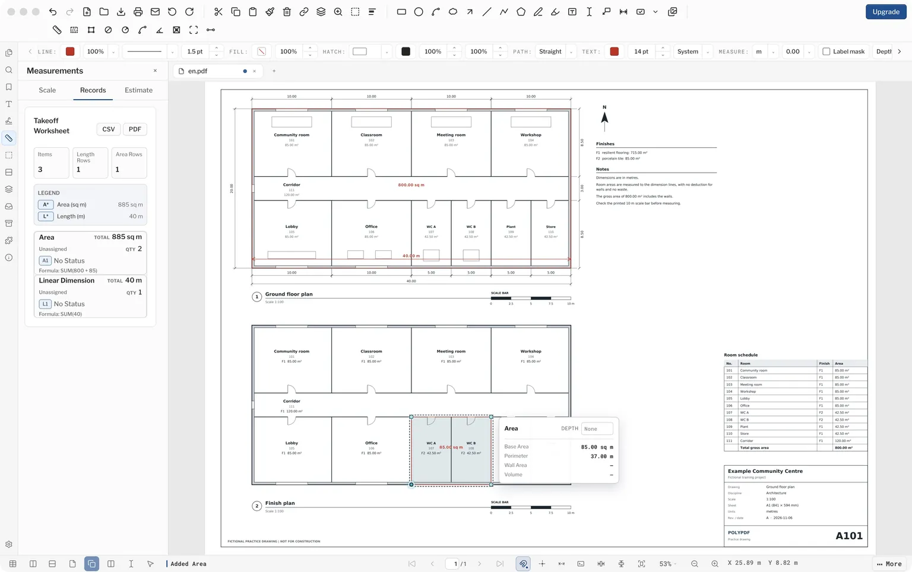

Metric plan check: public Mac 1.6.29 build 101
Tested by the PolyPDF publisher, Euclidean Software LLC, on (US Eastern time) on a MacBook Air with Apple silicon and macOS 26.4.1. This is a publisher test of the public Mac app, not independent certification.
Each language version of the takeoff pages offers its own plan: a different fictional building, drawn the way such plans are commonly drawn in one market. Every sheet below was calibrated and measured in the app, and every reading matched the figures printed on the sheet.
| Sheet | Building and sheet | Calibrated on | Check | Gross area | One floor finish | Worksheet |
|---|---|---|---|---|---|---|
| English | Fictional community centre, one building. A1, 1:100 | 10 m scale bar | 40.00 m | Gross area, outer wall faces: 800.00 sq m | Two F2 rooms: 85.00 sq m | CSV |
| German | Fictional village community hall (Dorfgemeinschaftshaus). A2, M 1:100 | 10 m scale bar in the title block | 19.99 m | BGF, outer wall faces: 264.67 sq m | Finish B2, inner wall faces: 25.13 sq m | CSV |
| French | Fictional municipal hall (salle polyvalente). A3, 1/100 | Printed 24,00 dimension | 17.50 m | Surface bâtiment, outer wall faces: 398.00 sq m | Parquet, inner wall faces: 199.25 sq m | CSV |
| Spanish | Fictional municipal social centre (centro de convivencia). A2, 1/100 | Printed 24,90 dimension | 19.60 m | Superficie construida, outer faces: 418.29 sq m | Parquet PQ, inner wall faces: 129.36 sq m | CSV |
| Brazilian Portuguese | Fictional primary-care clinic (UBS Porte I). A1, 1:50 | 5 m graphic scale | 27.00 m | Área construída, outer faces: 380.00 sq m | Finish GA, blue outline: 45.04 sq m | CSV |
| Japanese | Fictional timber neighbourhood hall (地区集会所). A3, 1/100 | Printed 14,560 dimension | 10.92 m | 床面積, wall centres: 152.37 sq m | Meeting room, wall centres: 59.62 sq m | CSV |
| Simplified Chinese | Fictional community day-care centre for older people. A1, 1:100 | Printed 50600 dimension | 14.60 m | Gross area, outer corners: 738.76 sq m | Finish 地1, zone outline: 112.32 sq m | CSV |
| Hindi | Fictional village council office (ग्राम पंचायत भवन), bilingual labels. A3, 1:100 | 10 m scale bar | 15.60 m | Plinth area, grid crossings: 130.20 sq m | Kota stone, grid crossings: 34.74 sq m | CSV |
| Arabic | Fictional neighbourhood centre (مركز حي). A2, 1:100 | Printed 29.10 dimension | 25.50 m | Gross area, outer wall faces: 537.57 sq m | Granite lobby, drawn lines: 32.20 sq m | CSV |
The German and Arabic sheets were also saved, quit and reopened with Unit system on Metric. Their scale and labels were unchanged. Saved German PDF, saved Arabic PDF.

What was tested?
| App | PolyPDF for Mac 1.6.29 build 101, from the unmodified public download, mounted read-only, in an isolated user profile. |
|---|---|
| License | No license key was entered. Pro was not activated or tested. |
| Machine-readable record | metric-verification.json. |
Repeat the check
- Open Settings. Under Measurements, set Unit system to Metric. PolyPDF starts on Imperial, and the choice applies to every PDF you open.
- Open a sheet and turn on View > Snap to Content. In the Measurements panel, under Formatting, set Length to Meters, so a plain number means metres.
- Click Calibrate by Drawing Line, drag along the reference named in the table, and enter its length. The dialog says whether both ends were snapped. In this test the first attempt after opening a sheet was sometimes unsnapped, so the attempt was cancelled and repeated.
- With Linear Dimension, measure the check length.
- With Area, trace the gross area and then the floor finish, zooming in on each corner. The sheet names the points to pick. The Japanese and Hindi sheets trace wall centres or grid crossings rather than wall faces.
- Open Measurements > Records and export the worksheet as CSV.
Read the worksheet correctly
The worksheet adds both traced areas into one Area total, so the first CSV row reads, for example, SUM(264.668 + 25.13). Read each trace from its own label or from the formula, not from the total: the floor finish sits inside the gross area. The lower Group/Value summary repeats the same quantities, so adding both tables would double count them.
If Unit system stays on Imperial
The setting in Settings decides how every PDF opens, whatever the file was saved with. A saved metric PDF then shows feet and inches. The measurement is the same; only the display changes.
What this record does not cover
- This record covers build 101 only.
- Every plan is fictional and not for construction. None was reviewed by a local construction professional or checked against any national drawing standard. The conventions come from published plans and guidance that we read, and practice differs between offices and regions. The Arabic sheet rests on the thinnest reading: we found no stamped Saudi sheet to compare it with.
- The Hindi sheet is bilingual by our choice. Drawings we read from India were mostly in English, but we found few from Hindi-speaking states.
- Windows, Pro features, symbol counts, electrical takeoff and complete estimates were not tested here.
- Saved PDFs were reopened in PolyPDF. In Apple Preview, the saved German PDF showed the area labels but not the dimension label. Adobe Acrobat and other PDF viewers were not checked.
- The run used automated control of the app’s normal interface. PolyPDF puts the computer’s user name on new markups, so the author was changed to “PolyPDF sample” in the Properties panel before saving.
- Earlier translated versions of these sheets, all one building, were replaced on this date.
Download PolyPDF for your desktop and check your own workflow before choosing Pro.